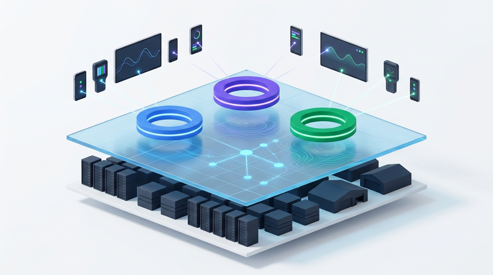

From Personas to Production · Why One Google Cloud Spine
Non-Invasive Overlay Architecture
After walking through the business story and demos, here is the single technical architecture connecting all 5 initiatives: agents sit above SAP, DMS, SFA, WMS, and TMS—grounded in BigQuery, Vertex AI Search, and Google Maps Platform.
Unified 4-Layer Overlay Topology
ZERO ERP REPLACEMENT

Every channel surface (Control Tower, CFA dispatch, and mobile SFA voice) draws from the same governed telemetry layer instead of siloed point scripts.
4 · Engagement Surfaces (Employees, CFAs & WDs)
Gemini Enterprise WebGoogle Workspace (Sheets / Chat)Indic Mobile & SFA Voice (Wohlig)FleetFlow / BeatPulse Control Tower
3 · Agent Orchestration & Guardrails
Gemini Enterprise Agent StudioVertex AI Agent Engine (ADK)A2A Agent-to-Agent ProtocolHuman Sign-Off & Write-Back APIs
2 · Google Cloud Knowledge & Telemetry Spine
Gemini 3.8 Live (Indic Voice) & 3.8 Flash / 3.1 ProBigQuery Supply Chain CortexVertex AI Search (Schemes, PODs, Contracts)Google Maps Live Traffic & Curfews
1 · Systems of Record (Preserved Intact)
SAP S/4HANA / IBP / DMSSales Force Automation (SFA)WMS & Factory SCADATMS · Carrier FASTag · EDI